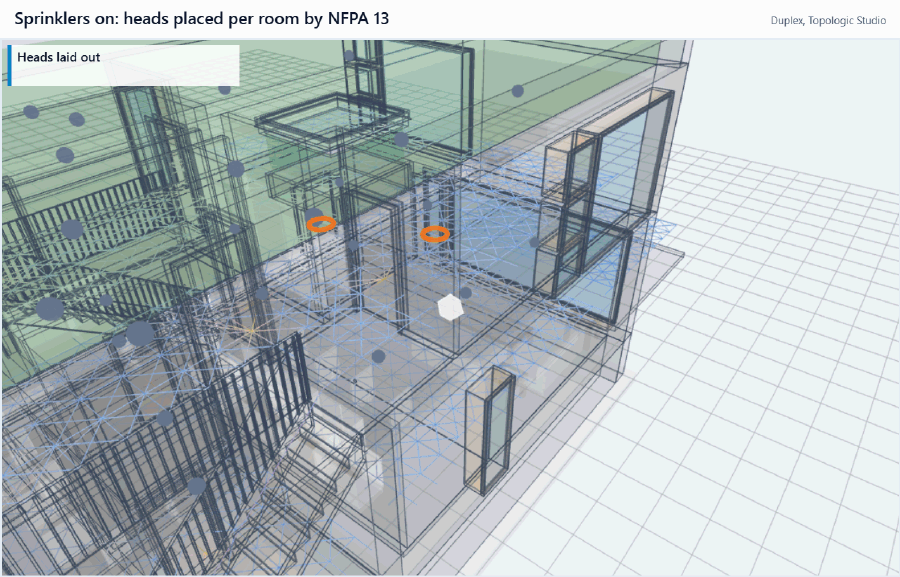
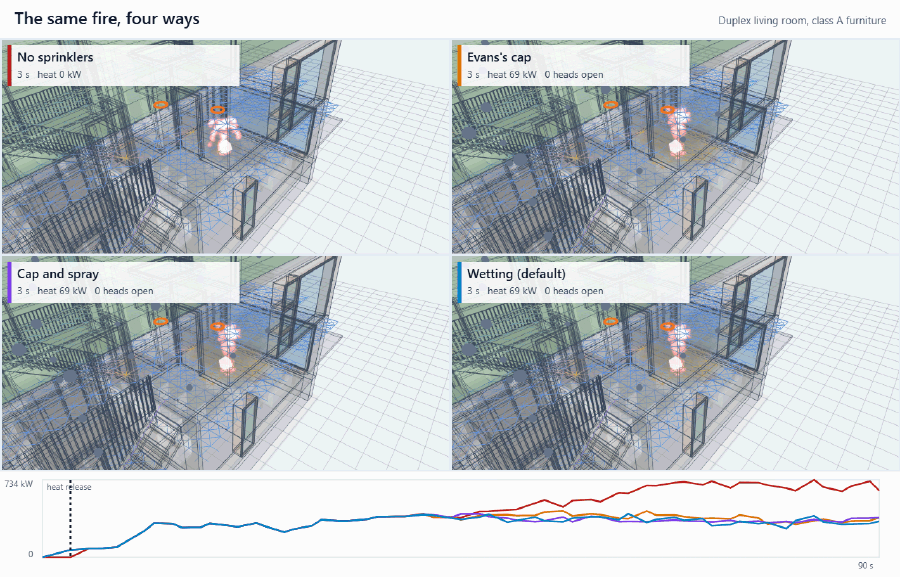
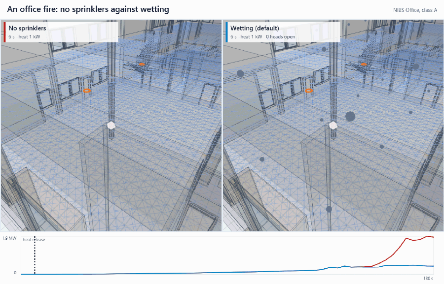
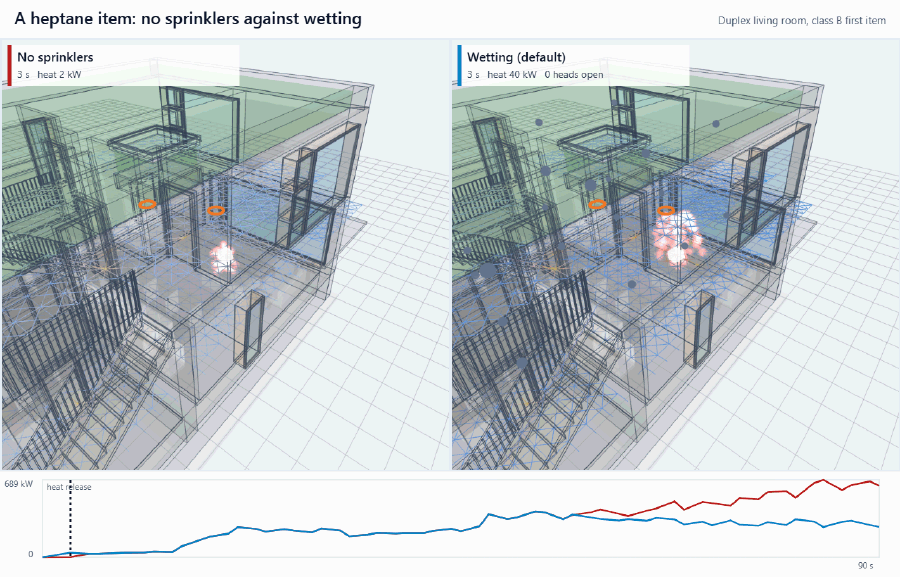
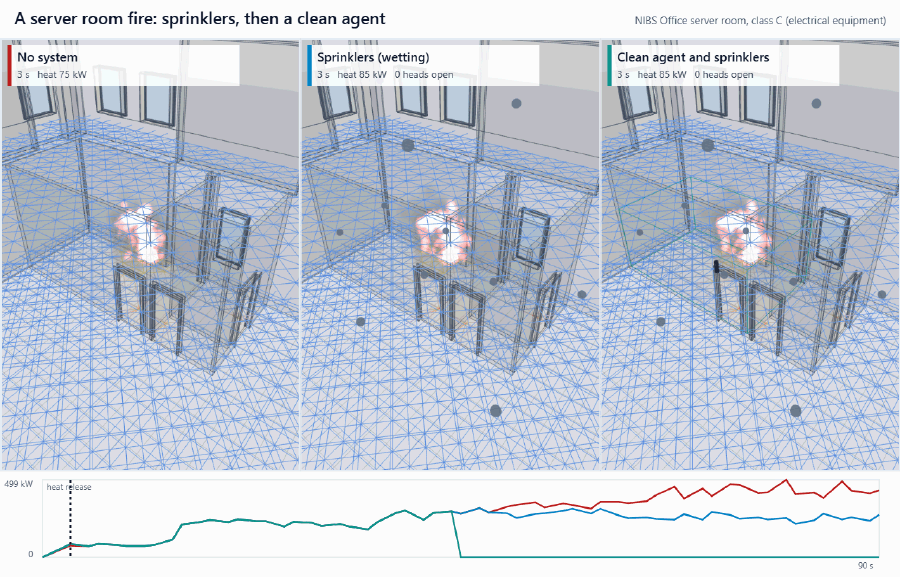

Fire suppression
Sprinklers, suppression systems by room use and portable extinguishers are in the Simulate step, the sprinklers and systems under the Flamescapes models. All are off by default; off, a run is exactly as before, at the same speed.

The workflow, open office and server room recordings on this page were made on 2026-11-08, with the activation fix and the first item as a design fire. The recordings made on 2026-11-07, before both, are kept in docs/media/2026-11-07/: the earlier versions of those three (workflow, open office, server room), the four modes compared and the fire classes (shown below), and an 84 s video that compares the fires and sums up the results then. In them the item burns as the solver burns it, faster than a design fire, so their heads open sooner but against larger fires than the app's now.


Switching sprinklers on
With the Flamescapes solver on, the Sprinklers section of the Simulate step offers these choices:
- Heads: the IFC's (this model's, else a second model's), else placed per room; only the model's; or placed per room by NFPA 13.
- Hazard: by room name (kitchens, plant and parking ordinary hazard 1, the rest light); light hazard (offices, homes, classrooms), 20.9 m² a head; ordinary hazard 1, 12.1 m² a head; or ordinary hazard 2, 12.1 m² a head with more water.
- Response: quick response (RTI 50), required in light hazard rooms, or standard response (RTI 100).
- An open head: sprays and wets the fuel it reaches (the default); caps the fuel under it (Evans 1993) and sprays; caps the fuel only; or only opens, leaving the fire as it is.
- Open the heads on: the estimate (Alpert's ceiling jet under the fire's own ceiling) or the late bound (the grid's top cell, which reads the jet low).
Off, nothing is laid out, no field is allocated beyond a 16-byte placeholder on the GPU, and a run keeps its kept-run key and its results. On, Vienna's run took 38.5 ms a step against 40.2 without.
Where the heads go
From the IFC
Studio reads IfcFireSuppressionTerminal (IFC4), or an IfcFlowTerminal typed by IfcFireSuppressionTerminalType (IFC2x3), named as a sprinkler and not a hose reel or hydrant, with the Revit property sets' temperature rating and K-factor. The NIBS Office's MEP model, for example, gives 292 heads rated 57 °C with K 81.
Laid out per room by NFPA 13
Without heads in the IFC, each IfcSpace room is taken from its mesh (its bottom faces and their minimum-area rectangle) and given heads at bay centres:
- at most 20.9 m² a head and 4.6 m apart for light hazard (12.1 m² for kitchens, plant rooms and car parks);
- no more than half the spacing from a wall, and at least 1.8 m apart (heads closer than that are merged);
- every point of the floor covered, checked on a 0.25 m sample, with extra heads where a bay centre is not clear of the walls, and both orientations of the bays tried.
Heads hang under the slab or roof over each room: Studio looks straight up from five points of the room for the nearest slab or roof, which is the ceiling when it is lower than the space's top. A space with nothing over it, such as a terrace or a balcony, is taken as outside when no wall round it rises 1.5 m above its floor or its name says so, and gets no heads, with the reason. Models with no slabs at all keep the space's top. Shafts and spaces drawn over smaller rooms are reported, not laid out. Without rooms, the heads are placed on a lattice over the walkable floor. Vienna's heads are laid out in under 50 ms.
The rule report and the requirement
Each room gets a rule report. Every rule cites SBC 801-CR-2018 903.3.1.1 and IBC 2021 903.3.1.1 with the NFPA 13-2019 clause; the obstruction rules say "cannot tell" until a structural or MEP model is added. The codes' requirement for sprinklers is checked for the occupancy chosen for the performance check: 903.2.8 (Group R throughout), 903.2.11.3 (a storey with 30 or more occupants at 16.764 m or more, IBC's 55 ft, against SBC's 17 m), high-rise, and the A-3 and E triggers.
The current edition is SBC 801-CR-2024, whose text was not obtained (the English edition is sold). The checks follow SBC 801-CR-2018, with IBC 2021 where it is stricter. This guide cites clause numbers and values only.
A second model and obstructions
In the Model step, Second model (MEP, structure) adds an MEP or structural IFC of the same building. It is converted and cached as the first is, and drawn in the first one's frame through the two models' coordination matrices, or through both files' IfcMapConversion when both have one. Studio then checks the units, the site placement, TrueNorth (as metadata only), the map conversions, the storeys matched by elevation (a storey outside the first model's range, such as a foundation level, is a note) and the share of the smaller plan the two have in common. A file with no geometry says so.
Measured: the NIBS Office with its HVAC model (292 sprinklers, all placed 5 cm under the architecture's ceilings, 4.7 s to add) and its structural model (356 beams, 96 % overlap, the foundation level noted); the Duplex with its MEP model (98 %); and the buildingSMART Simple-Scene building with its HVAC model and its plumbing, the latter through the two map conversions, checked by hand to 0.1 m. The second model's sprinklers feed the layout when the first has none.
Beams from either model, and ducts and cable trays from a second model, are checked as obstructions; pipes are left out of the beam rule. The rules are NFPA 13-2019 Table 10.2.7.1.2 (the beam rule, without interpolation), NFPA 13-2022 10.2.7.3.1.3 and .4 (the three times rule, structural members only in light and ordinary hazard) and NFPA 13-2019 9.5.5.3 (heads beneath obstructions wider than 1.2 m). A head that fails a rule moves within its bay to the nearest point meeting every rule, and wide obstructions get heads beneath. Without obstructions the layout is unchanged. 198 heads against 1,000 obstructions lay out in about 40 ms. A switch in the Flamescapes settings, Beams and ducts in the fire grid, off by default, makes them solid (the NIBS Office: 999 items, 82 ms to extract).
When a head opens
A Flamescapes run opens each head when its link reaches its rating, by the RTI equation with conduction to the mount. The link is stepped exactly on the gas, held at the mean of each frame's two readings, and the crossing time is found inside the frame. Two readings of the gas are kept:
- The estimate (the default) takes Alpert's ceiling jet for the frame's heat release, with the ignition cell as the plume's axis, each head's own height over it and its distance from the head's position, for heads with a clear line to the plume's ceiling cell (walls and lintels part rooms), over the grid's layer.
- The late bound reads the gas at the top cell of the head's column.
The run card gives both times and the heat release at each, and the view shows the heads, blue once open. No IFC carries a head's RTI or C, so quick response is 50, standard 100 and C 0.4, as the panel says. In the Duplex's living and bedrooms, with the first item a medium design fire, the first head opens 109 to 123 s after ignition by the estimate, against 141 to 177 kW. Suppression starts at the end of the frame in which a head opened, so up to one frame late. The CPU and the GPU agree: a head over a 200 kW burner opens at 32.0 s on the CPU and 31.2 to 32.1 s on the GPU by the estimate, with 35.4 kg of water on both; over a fast design-fire item, at 57.5 s on both, the item releasing the same heat on both.
Against NIST's measured tests the estimate opens the first head at 0.8 to 1.3 of the measured time, about a quarter late in a small closed room. Until 2026-11-08 it was late in rooms and far later in large rooms; see what was changed. A late opening is conservative for tenability; for anything that starts on sprinkler flow, such as an alarm, it is not.
What an open head does
Where the head sprays, part of its water evaporates in the hot gas on the way down, at most what cools each cell to boiling (Fire-X's energy-limited evaporation on the grid); the steam joins the gas and dilutes the oxygen, and the drops drag on the gas. The rest reaches the floor. At sprinkler scale this direct effect is small: on the Duplex 0.14 of 37.7 kg evaporated in 60 s.
- Wetting (the default)
The water that reaches the fuel soaks into the fuel cell it ends on, a share of 0.52 of what reaches it, mixed in at 20 °C; the solver's drying then holds the surface near 100 °C. Fuel stacked below the top cell stays dry. The share was calibrated on a test room so that at 0.068 mm/s, the light hazard density, wetting burns as much covered fuel after the head opens as Evans's cap (7.4 kg, against 21.3 kg with no water). It then follows the water: 9.0 kg at 0.026 mm/s and 4.5 kg at 0.133 mm/s, where the cap gives 8.6 and 7.4 kg. CPU and GPU agree (54.3 and 52.9 MJ released in a 200 kW test case, against 72.5 and 66.7 MJ with no water).
- Evans's cap and the spray
Each covered cell's burning is capped at its rate when the head opened, decaying as Evans (1993) measured for the spray's density. Below 0.026 mm/s there is no cap. Evans's correlation gives the least reduction to expect. The head also sprays.
- Evans's cap only
The cap without the spray.
- Only opens
The heads open and the fire is left as it is, for reading activation times alone.
Which mode, and why wetting is the default
In 12 test fires on the Duplex, Vienna, and the NIBS Office and Clinic, with the first item as a design fire (tools/sprinkler-check.mjs, 180 s, 2026-11-08), heads opened by 152 s in eight, and wetting cut the heat released by 37 to 89 %; Evans's cap and the spray came within 4 % of it, since the water on the item decays it the same way in every mode. In the Clinic's mechanical room, with no ceiling over the fire, and in Vienna's garage the first head opened at 162 and 168 s, too late to matter in 180 s; in the Clinic's atrium void one head opened with no effect, and the Office's lift shaft has no heads. With the solver's own burning, the same fires opened heads by 47 s against fires already near 1 MW; before the activation fix the heads in the Clinic's large rooms opened at 63 to 68 s, and no mode helped there.
Single runs mislead. The same Duplex fire, with its room contents laid out three ways, released 137 to 272 MJ with no sprinklers; across the three, wetting cut 60 to 79 %, the spray changed the heat by +20 to -55 % and the cap by +11 to -38 % (tools/sprinkler-seeds.mjs). A run with the spray's drag off gave the same result, so the drag is not the cause. Part of the reason is that pyrolysis gas which does not burn where it is made gathers under the ceiling and can ignite at once, with or without sprinklers, so a single frame can peak higher with suppression than without. Studio's tests therefore check the fuel and the energy, and every covered cell's cap step by step, not one frame's heat release.


Water by fire class
Sprinkler drops, about 1 mm across, are too large to put a flame out in the gas: a spray must take about 0.4 of the flame's heat per unit volume and push down with 0.7 of its upward force (Rasbash 1986). Sprinkler water works by cooling the burning surface below its fire point, where it reaches it. What that means depends on what burns first.
| Class | What the water does | In the solver |
|---|---|---|
| A, ordinary combustibles | Cools the burning surface below its fire point. | Wetted and capped. |
| C, electrical | Once the circuit is dead, its plastic burns as a solid. | Wetted and capped. |
| B, heptane | Its fire point is below the water's temperature and it is lighter than water, so the water sinks through the pool, which keeps burning. Putting it out takes foam. | Neither wetted nor capped. |
| K, cooking oil | Water under hot oil turns to steam and throws the oil out. A NIST residential sprinkler put out one of two cooktop fires and spread oil both times. | Neither wetted nor capped. |
| D, magnesium | Water gives hydrogen and heat: 17.5 MJ and 0.11 kg of hydrogen per kg reacted. | Neither wetted nor capped. |
| L, lithium-ion pack | The water does not reach the cells. | Neither wetted nor capped. |
The room's class A contents round such an item are wetted and capped as usual, and the Sprinklers section says why when one of these burns first. These items also no longer start with wood's 10 % water, which changes runs of classes B, D, K and L with or without sprinklers. Not modelled: the oil's eruption (no study measured the oil thrown out) and the metal's reaction with water (the hydrogen needs a fuel kind the solver does not have).

Validation against measured tests
The activation model was checked against full-scale tests from NIST reports (tools/sprinkler-validation.mjs). A prescribed heat-release burner was added to the CPU solver for this; without it the fields are bit-identical to the unchanged solver. Each test is a box built from its data, on cells of about 0.3 m (0.507 m for UL/NFPRF), with the heads at their measured positions and their measured RTI and C, run with the walls' surface coefficient at the app's 10 W/(m² K) and at 200 W/(m² K), the value walls had until 2026-11-08.
- Vettori 1998 (NISTIR 6253): a flat ceiling, a methane burner on fast, medium or slow growth, RTI 55, C 0.25, 68 °C.
- Vettori 2003 (NISTIR 7079): flat, sloped and beamed ceilings in a second room.
- Bittern 2004: chair fires, from the FDS Validation Guide.
- UL/NFPRF Series I (NISTIR 6196-1, 1998): a 7.6 m ceiling with flowing heads over a heptane spray burner.
- Evans 1993 (NISTIR 5254): heat release after activation, for the cap.
The link on measured gas
Driven by the gas measured at Vettori's 1998 heads, the link opens at 0.81 to 1.18 of the measured time, median 1.00, in the 18 of 45 records that open within the record, and is never more than 19 % early. Another 18 run past the measured time without opening, mostly fast fires and wall and corner fires, where rows about 7 s apart and the thermocouple's lag under-read a fast-rising gas; the other 9 end before the measured time. The link model itself is sound.
On the fire grid
| Data set | Heads measured | Opened, walls at 10 W/(m² K) | Median, 10 | Opened, walls at 200 | Median, 200 | FDS, the same tests |
|---|---|---|---|---|---|---|
| Vettori 1998, smooth, detached (9 tests) | 18 | 18 | 1.23 | 16 | 1.64 | 1.13 |
| Vettori 2003, flat smooth (tests 1 to 4) | 12 | 12 | 0.79 | 12 | 1.13 | 0.73 |
| Vettori 2003, flat, two beams (tests 13 to 16) | 9 | 9 | 1.09 | 0 | - | 0.90 |
| Bittern, centre chair (8 tests) | 16 | 16 | 1.00 | 13 | 1.19 | 1.06 |
| UL/NFPRF I-17, I-18, I-20, I-22 | 16 | 16 | 1.10 | 16 | 1.16 | 0.98 to 1.09 (first heads) |
"Opened" counts heads open within twice the measured time; the median is over those. Both columns use each head's own height and distance and the suspended ceilings (below). FDS: the FDS Validation Guide, sixth edition, and its paired data in firemodels/out, on grids of 0.07 to 0.2 m.
At the app's 10 W/(m² K) the estimate opened all 71 measured heads within twice the measured time, and the first head of every test: at medians of 1.26 (Vettori 1998), 0.78 and 1.11 (2003, smooth and beamed), 0.99 (Bittern) and 1.11 (UL/NFPRF) of the measured time. FDS is early on the 2003 smooth tests too, which points at that set's fire curve (its gas was shut off at the first activation) more than at either model. The late bound opened 46 of the 71 heads within twice the measured time (none at 200), so it now brackets the estimate in rooms; it is still not shown as the time a head opens.
Why the estimate was late, and what was changed
Until 2026-11-08 the estimate was late in rooms: the first head at a median 1.64 of the measured time in the 1998 room, none behind the 2003 beams, 23 of 29 first heads within twice the measured time. In the app's large rooms it was far later, or no head opened. Four causes were found (tools/activation-diagnose.mjs, which also drives each head's link by Alpert's jet alone on the run's own heat release as a reference).
- Heat lost to the walls. One surface coefficient, 200 W/(m² K), the top of the Flamescapes paper's range and kept for the fuel so that a burning item lights its neighbours, took most of the ceiling jet's heat into the walls. Walls, slabs and ceilings now have their own, 10 W/(m² K): FDS's default convection in rooms like these gives 4 to 14, and Cooper's ceiling correlation (1982) 7 to 13 two metres from a plume.
- Suspended ceilings missing from the fire grid. The import dropped ceilings (
IfcCoveringCEILING) so that they would not be walked on. In the NIBS Office's 610 m² open office the fire's gas rose past the heads to a ceiling 6.1 m over the fire and no head opened in 120 s; in the Clinic, heads hung at the 4.57 m slab over 2.68 m ceilings and opened at 65 s against 4.5 MW. The ceilings are now in the fire grid, and the heads hang from them. A 52 mm ceiling split evenly between two 0.4 m cells filled each by 6.5 %, under the 8 % at which a thin element seals; the larger half of such a pair now seals. - Grid geometry. The estimate took the ceiling's height from the open column over the first item and each head's distance between cell centres: in Vienna's garage the column stopped under a low solid 0.6 m over the fire, and UL's heads all 2.15 m from the burner sat 1.43 to 2.87 m from it on the grid. It now takes each head's own height over the first item and its distance from the head's position.
- The coarse grid. On 0.3 m cells a 100 kW plume and the 0.2 m ceiling jet are not resolved, and the hot layer is spread down the room. This is why the 1998 room stays about a quarter late. A finer grid (0.2 m) did not help.
In 14 growing fires in eight models, with these changes, the first head opened before Alpert's jet alone would open the nearest head on the run's own heat release, or at most 0.5 s after it, in 13: the NIBS Office's open office at 26 s, the Clinic's waiting area at 22 s. In the FZK-Haus living room it opened 2.4 s after: that model has no ceiling at the heads' height, and the nearest head has no line of sight to the plume. These runs burned the first item as the solver burns it, about 500 kW within 15 s in every model, where an ultra-fast t-squared fire takes 52 s, so heads opened at 250 to 600 kW, as real quick-response heads would on so fast a fire. With the first item as its class's design fire, the app's default since 2026-11-08, the first head opened at 33 to 319 kW, 53 to 165 s after ignition, in 12 of 16 fires; in the other four, under a high or open ceiling or with few heads in sight, the room's contents caught first and the head opened at 0.45 to 1.6 MW. Evans's decay is slower than 19 of the 23 decay constants measured in his own tables, so as a least reduction the cap holds on those data, except for one workstation and one crib run.
The results the analysis trusts least are the 1998 room's set-up (a sealed door, an assumed upper-floor height, a snapped I-beam), the assumed C of the 2003 heads, the flame column height chosen for the burner, Bittern's curves and modelling choices, and UL's head counts, which depend on the 200 s horizon and the spray model. The first results, R1 to R9, with the data sets, licences and DOI checks, are in the sprinkler validation note; the diagnosis, the fix and its tests in the activation fix note, and its sources in the literature note.
Extinguishers
Extinguishers, in the Simulate step and off by default, are read from the IFC by name (from the model or a second model), or placed on the walk by a greedy cover so that nowhere is more than 22.86 m from one. That distance is the stricter of SBC 801-CR-2018 Table 906.3(1) and NFPA 10 Table 6.2.1.1, measured as a walk on the graph; the placement check also applies the count rule and where extinguishers are required (906.1). On the Duplex, 4 units are placed in 215 ms and pass.
- Hazard (NFPA 10): light (offices, classrooms, hotels: 279 m² per A unit), ordinary (shops, car parks, workshops: 139 m²) or extra (kitchens, storage of flammables: 92.9 m², 4-A).
- The unit used: ABC dry chemical 2.3 kg (2-A:10-B:C, 14 s of discharge) or 4.5 kg (4-A:80-B:C, 20 s), water 9.5 L (2-A, 60 s), foam 9.5 L (3-A:20-B, 50 s), or CO2 2 kg (34B, 8.5 s).
After a fire, one person near it sets off when they see it (30 s), or after detection, the alarm and the median pre-movement time. They walk to the nearest suitable unit, ready it (13.4 s, or 7.2 s if trained) and attack from 1.8 m. The heat release then, from the Flamescapes run or else from the two-zone settings' t-squared fire (the result says which), is judged against what the unit's rating can put out: put out, not put out, or cannot tell.
On the Duplex, a person who sets off on seeing the fire attacks at 58 s against 37 kW (put out); one who waits for the alarm attacks at 222 s against 547 kW (cannot tell: between 80 and 900 kW for a 2-A unit). Not yet modelled: the unit's effect on the fire in the run, mounting heights, and the rule for units on the escape route.
Suppression systems by room use
Systems by room use, under the Flamescapes models and off by default, gives each room its system from its name and the building's occupancy. The occupancy is the performance check's occupants setting, shared with it.
- Apartments and hotels (Group R): water sprinklers in every room, whatever its name (SBC 801-CR-2018 903.2.8).
- Server, computer, telecom, electrical and UPS or battery rooms: a clean agent, HFC-227ea (FM-200), at NFPA 2001's class C design concentration of 7 %. The room keeps its sprinklers, as NFPA 75 asks; Agent only leaves them out, which needs the fire official's approval. A computer lab or classroom is a room of desks and stays on sprinklers.
- Generator, fuel, oil, flammable-liquid and hazardous storage rooms: foam-water sprinklers at 6.5 L/(min m²) (NFPA 11), since water does not put out a burning pool.
- Every other room: water.
The agent's mass is W = (V / s) C / (100 - C), with s = 0.1269 + 0.000513 t m³/kg at the room's temperature t. The special rooms also get an extinguisher of their own at the door: carbon dioxide at IT, telecom and electrical rooms, class B foam at fuel rooms, class K at kitchens. The ABC powder units on the routes come from Extinguishers. The NIBS Office gets 89 water and 9 clean agent rooms (330 kg of agent), and the Clinic 250 water, 10 clean agent and 2 foam rooms. The Duplex, as apartments, gets water only.
In a run, a clean agent room is released 30 s after a detector in each of two zones under its ceiling responds. The agent rises linearly to 7 % over 10 s and holds for 10 minutes. At or above 5.2 % (6.62 % over a liquid's vapour, the heptane cup-burner value), gas combustion and the oxidation of solid fuel in the room stop, while pyrolysis and evaporation go on, so hot fuel can burn again outside the room or once the agent is gone. In a foam room, after one detector and 30 s, the blanket cuts a pool's evaporation linearly to a tenth at control and to nothing at extinguishment (1.05 and 3.2 L/m² of solution delivered, from Back and Farley's tests: about 10 and 30 s), and the solution's water wets the room's ordinary fuel as sprinkler water does. The view outlines the rooms in teal (agent) and amber (foam) and fills them once released; the run card says when each saw smoke, was released and acted.

Tested with tools/systems-check.mjs (CPU solver, 180 s, the mean of three contents seeds; 2026-11-08, after the activation fix, the first item a medium design fire), as heat released against no system:
- Server rooms (class C): sprinklers cut it by 55 % in the Office and 80 % in the Clinic, the first head opening at 108 to 116 s; the clean agent by 85 % and 93 %, reaching the class A concentration at about 103 s (the smoke reaches the room's detectors later than from the solver's own, faster fire).
- Class A fires on sprinklers: 76 % in an Office conference room, 81 % in a Clinic one, 54 % in a Clinic examination room, 88 % in the Duplex's living room.
- A heptane spill kept alight by its burner in the Clinic's store (a pool keeps its own burning): sprinklers 72 % (opening at 29 s, they wet the room's other contents), foam 8 % (the burner keeps the pool burning under the blanket).
With the solver's own burning (after the fix): sprinklers opened at about 25 s, server rooms 67 and 61 %, the agent 91 and 90 % at 42 s. Before the fix the sprinklers opened at 39 to 57 s: server rooms 65 and 28 %, the spill 26 % (sprinklers) and 41 % (foam), the Clinic's examination room no change (heads opened in one seed of three).
Not modelled: the agent's cooling, its dilution of oxygen and its decomposition products (HF), and leakage during the hold; doors are not closed by the release. The 30 s agent delay is specification practice (the code sets no number), the foam's 30 s delay is assumed, and the foam times are extrapolated from one test series. Some 2022 NFPA clause numbers come from the committees' public draft reports. The sources, values and doubts are in the suppression systems note.
What is proved
Six Lean 4 modules back the suppression work, each on Lean's standard axioms only. Each module's header maps every theorem to the function it backs and lists what it leaves out.
Sprinklers.lean(28 theorems): the layout, the link's step and its exact form, the activation time, and Evans's cap.Suppression.lean(58): water is conserved down a column and over all heads; the evaporation step conserves energy and leaves the cell between boiling and its old temperature; steam never raises the oxygen's share; Evans's cap never rises. It also found that Fire-X's Eq. 30 is the case in which the latent heat is paid from the liquid, not the case of a cell pinned at boiling, as the plan had said.Wetting.lean(12): the wetting step conserves energy, cools a hotter surface and never warms it, and per column the water emitted is the water evaporated plus the water wetted plus the water left.Obstructions.lean(36): the beam table as the code builds it is contiguous, every distance gets exactly one row, and moving a head away from an obstruction never makes the beam rule stricter.Extinguishers.lean(47): adding a unit never lengthens a walk, and a pass on the graph is a pass of the straight-line check but not the converse. It found the count rule's comment wrong for the default ratings, which was then fixed.Federation.lean(16): a point of the second model is drawn where the first model draws it, through the coordination matrices or the map conversions.
The full list is on the Methods, proofs and sources page.
Sources
- NFPA 13 (2019 and 2022 editions) for placement and obstructions; NFPA 10 for extinguishers; SBC 801-CR-2018 Sections 903 and 906 and IBC 2021 Section 903, cited by clause number.
- Alpert's ceiling jet correlation and Heskestad's plume, as formalised in
FireDynamics.lean; McCaffrey (1979), NBSIR 79-1910, doi:10.6028/NBS.IR.79-1910, for the colours of the design-fire item's drawn flame. - Evans (1993). Sprinkler fire suppression algorithm for HAZARD. NISTIR 5254. doi:10.6028/NIST.IR.5254.
- Vettori (1998). Effect of an obstructed ceiling on activation time of a residential sprinkler. NISTIR 6253. doi:10.6028/NIST.IR.6253.
- Vettori (2003). Effect of beamed, sloped, and sloped beamed ceilings on the activation time of a residential sprinkler. NISTIR 7079. doi:10.6028/NIST.IR.7079.
- UL/NFPRF Series I (1998). Sprinkler, smoke and heat vent, draft curtain interaction. NISTIR 6196-1. doi:10.6028/NIST.IR.6196-1.
- Bittern (2004), chair fire tests at the University of Canterbury, as given in NIST's FDS Validation Guide.
- Rasbash (1986), on water sprays and flames, as cited in the water by fire class note.
- Wrede et al. (2025), Fire-X: Extinguishing Fire with Stoichiometric Heat Release, doi:10.1145/3763338, CC BY 4.0, for the evaporation.
- NFPA 2001 (clean agents), NFPA 11 (foam), NFPA 75 and 76 (IT and telecommunications rooms), and SBC 801-CR-2018 Sections 903.2.8, 903.3.1.1.1 and 904, cited by clause number; the NFPA 2022 and 2025 clauses as printed in the committees' public draft reports.
- Zegers, Williams, Fisher, Fleming and Sheinson (2000). Suppression of nonpremixed flames by fluorinated ethanes and propanes. Combustion and Flame. doi:10.1016/S0010-2180(99)00162-5.
- Back and Farley (2020). Evaluation of the fire protection effectiveness of fluorine free firefighting foams. Fire Protection Research Foundation.
- Back (2023, online 2020). An evaluation of the firefighting effectiveness of fluorine-free foams. Fire Technology. doi:10.1007/s10694-020-01051-4.
The NIST reports are US Government works. The digitised measurements and validation inputs come from NIST's firemodels repositories and are kept with NIST's notice in the repository's benchmark/validation/. The design and the departures from it are in the sprinkler note, and the extinguisher, water-by-class and systems research in the extinguisher note, the water by fire class note and the suppression systems note.